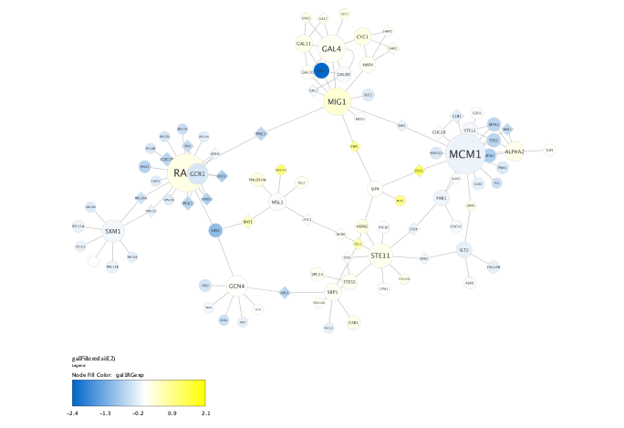
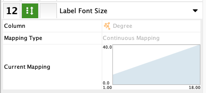
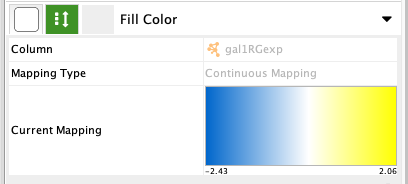
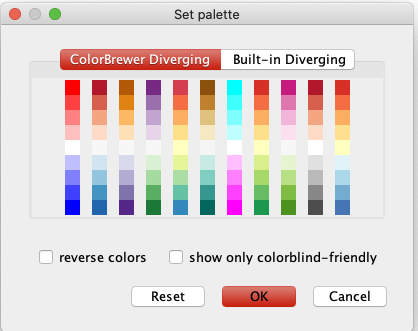

Introduction
If you haven't already, install the Legend Creator app.
It can generate a legend that illustrates the visual mapping used in your graphs.
There is a variety of different features of the Legend Creator, but its primary function is to add a color gradient to quantify the mapping of fill color in a legend. This is a common function in Cytoscape graphs and hard to recreate accurately if you use downstream programs (e.g., Adobe Illustrator) to annotate graphs for publication.
Background
First, let's review how
Mappings can be continuous or discrete. The icon in the center column of the styles shows a double headed arrow for the right side of the icon for continuous mappings, and dots for discrete mappings.

Continuous legends are made from numerical values, where the range is determined by looking at the node table, such as expression level. We’ll look at those first.
Note: If you use Passthrough Mappings, they will not create a legend entry, and are not discussed here.
Setup
We need a network with some styles set to demonstrate this app. Let's load the Yeast Perturbation network, provided by Cytoscape as a sample session file. You can find the Sample Sessions in the
Control Panel
In the Legend tab of the Control Panel, there is a button to scan the network, fields for the legend title and subtitle and then check boxes for the continuous and discrete mappings that are defined in the current style.
The
This scan happens automatically whenever you load or switch networks, so you only have to push the button manually if you edit the styles.
Note: Legends are generated as annotations, and as such, are not updated dynamically. You must manually remove and recreate the legend if you change your styles.
Control Panel
The title and subtitle are just text fields. The name of the network goes into the default title, but you can enter whatever text you want. You don’t have control over the font, size or alignment at this point, but I’ll show you how to edit those later.
Moving down the control panel, we see the list of mappings. They show the name of the column in the node table followed by the name of the attribute to which it is mapped. In this example, we have color mapped to our variable called gal1Rexp, shape is mapped to a column called isLink, and the size of a node is mapped to the number of neighbors, or its degree.
Check the Vertical Layout option, to position the legend along the right margin of the graph.
Check the box Draw Bounding Box if you want to include a rectangle surrounding all the legend entries.
Click
First Draft
As you see, we got four components because we had all four mappings checked. The first two are called Ramp Functions that show both node size and font size get bigger for nodes of higher degree, i.e., those with more neighbors. Third, a color gradient entry shows expression level of our protein of interest.
Depending on the story you are trying to tell with your presentation, many mappings don’t add much information. Sometimes mappings are redundant. So it will often make sense to only show a small number of the possible items. But the easiest way to decide is to just make the full legend, look at the result, delete the legend and remake it with fewer boxes checked.
Ramp Functions
The first two are associated in that they both map measures of the nodes’ degree to the size of both the nodes and its label. This is a continuous mapping, meaning there is a function that calculates the size of the node and font from a numerical column in the node table.
Note: Although size is a useful attribute to map, showing it in a legend is often not too useful. Our perception of size is qualitative. We can tell big from small, but we can’t tell a 50 pixel diameter from 63 pixel diameter if they are not right next to each other and the same shape. So adding a legend to show the quantitative measure of size tends not to add much to your drawing, and is optional or discouraged in many cases.

Color Gradient
The next one is a color gradient. It should match our continuous mapping for the variable gal1RGexp in the Style menu. This is clearly the most important entry in our legend. Perceptually, color attributes are the most powerful mapping and should be used for the strongest message you are trying to convey. The human eye has very good color perception, even if the nodes are separated across the graph or are different shapes and sizes.
Important Note: Because color is such an important attribute perceptually, it is important to use color with care. Rather than defining arbitrary colors for minimum and maximum values, it is important to use Palettes of colors that have been curated to make sure they have consistent color saturation across the range. If you double click on the gradient, an editor will come up, with an button to choose palettes in the top left corner. It is highly recommended to use defined palettes over arbitrary colors.
 Shape Legend
Another legend entry we could generate is a Shape Legend. It is a discrete mapping, meaning that the values are listed explicitly, instead of being calculated from a function.

Keep it Simple
Not every mapping used will necessitate an entry in the legend, and showing too many entries will distract from the graph. The legend entries to show size, line style, or shape, or color are separate components and can be included or not on an individual basis.
Here is our network with three mappings shown:
Layout
If you lay out the legend horizontally, it will be placed at the bottom of the graph. If you lay out the legend vertically, it will be positioned at the right of the graph.
The legend is placed in a default position outside the bounds of the network. Much of the time you’ll have to move it from where it shows up to where you want it. This can be tricky, because the Cytoscape editor distinguishes annotations from nodes and treats them differently. If I try to click on the legend, it will pan the screen, just like clicking on the background.
To move the legend, first go here to enable annotations to be active in the editor. Then hold down the shift key while dragging to select items and the annotations get selected with nodes. There is a yellow box around selected annotations. Now they can be dragged.
Annotation Panel
To edit more specific aspects of the legend, such as the fonts or sizes, or the color of the background, you’ll want to go to the Annotation control panel. There, you’ll see every label and tick of the legend in a list view.
There are several opertations available to edit annotations here:
- Add or remove items from the foreground or background layers.
- Move items up or down, or move them between the layers.
- Right-click and select
Modify Annotation... to edit the item.
Summary
This app creates legends for the most common attributes applied to nodes in your graph.
It is also reasonable to want to make legends around edge attributes, such as line style, color and thickness, but that is not included in this first release.
Cytoscape will tell you when the update is posted.
If you have problems, questions or feature requests, please contact me:AdamTreister@gladstone.ucsf.edu